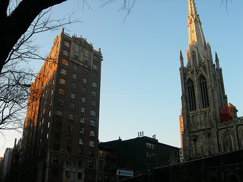

NYU Community
Brittany Hall
NYU 1학년 학생들이 가장 많이 거주하는 인기 기숙사 중 하나

특징
📍 주소: Broadway와 East 10th Street의 코너에 위치
📌 워싱턴 스퀘어 파크에서 약 0.3마일(0.5km) 거리
👥 약 579명의 1학년 학생들이 거주, 다양한 커뮤니티 활동 제공
✅ 장점: 깨끗한 시설, 최근 리노베이션, 현대적 편의성
⚠️ 단점: 교회 종소리, 식당 없음
👍
← 메인으로 돌아가기